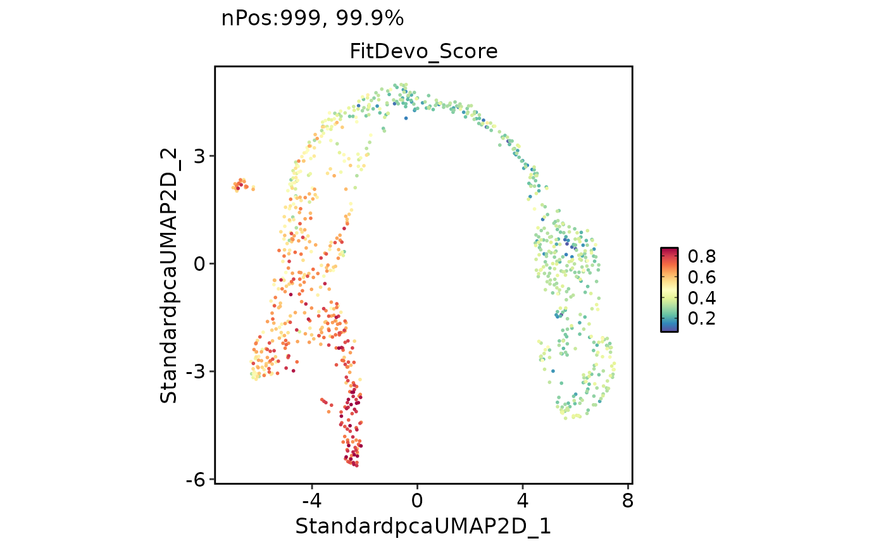
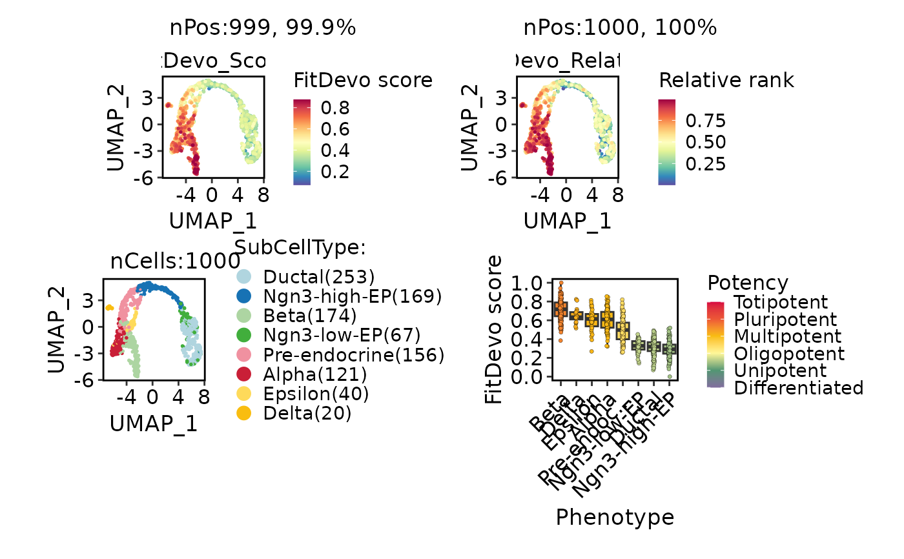

Run FitDevo developmental potential scoring
Usage
RunFitDevo(
object,
assay = NULL,
layer = "data",
features = NULL,
nfeatures = 2000,
reference.by = NULL,
score.name = "FitDevo_Score",
relative.name = "FitDevo_Relative",
tool_name = "FitDevo",
verbose = TRUE,
backend = c("cpp", "r")
)Arguments
- object
A
Seuratobject or expression matrix with genes in rows and cells in columns.- assay
Assay used for Seurat input.
- layer
Layer used for Seurat input.
- features
Features used for scoring. If
NULL, the most variable genes are selected.- nfeatures
Number of variable genes selected when
features = NULL.- reference.by
Optional metadata column containing ordered development labels. Numeric values are used directly; factors use their level order.
- score.name
Metadata column for the developmental potential score.
- relative.name
Metadata column for the relative rank.
- tool_name
Name used in
srt@tools.- verbose
Whether to print progress messages.
- backend
Computation backend.
"cpp"avoids materializing the full feature-by-cell rank matrix for supervised scoring;"r"retains the reference implementation.
References
Zhang F, Yang C, Wang Y, Jiao H, Wang Z, Shen J, Li L. FitDevo: accurate inference of single-cell developmental potential using sample-specific gene weight. Briefings in Bioinformatics, 2022. doi:10.1093/bib/bbac293.
Examples
data(pancreas_sub)
pancreas_sub <- RunStandardWorkflow(pancreas_sub)
#> ℹ [2026-08-16 19:51:21] Start standard processing workflow...
#> ℹ [2026-08-16 19:51:21] Checking a list of <Seurat>...
#> ! [2026-08-16 19:51:21] Data 1/1 of the `srt_list` is "unknown"
#> Warning: Data 1/1 of the `srt_list` is "unknown"
#> ℹ [2026-08-16 19:51:21] Perform `NormalizeData()` with `normalization.method = 'LogNormalize'` on 1/1 of `srt_list`...
#> ℹ [2026-08-16 19:51:21] Perform `FindVariableFeatures()` on 1/1 of `srt_list`...
#> ℹ [2026-08-16 19:51:22] Use the separate HVF from `srt_list`
#> ℹ [2026-08-16 19:51:22] Number of available HVF: 2000
#> ℹ [2026-08-16 19:51:22] Finished check
#> ℹ [2026-08-16 19:51:22] Perform `ScaleData()`
#> ℹ [2026-08-16 19:51:22] Perform pca linear dimension reduction
#> ℹ [2026-08-16 19:51:22] Use stored estimated dimensions 1:23 for Standardpca
#> ℹ [2026-08-16 19:51:23] Perform `Seurat::FindClusters()` with `cluster_algorithm = 'louvain'` and `cluster_resolution = 0.6`
#> ℹ [2026-08-16 19:51:23] Reorder clusters...
#> ℹ [2026-08-16 19:51:23] Skip `log1p()` because `layer = data` is not "counts"
#> ℹ [2026-08-16 19:51:23] Perform umap nonlinear dimension reduction
#> ✔ [2026-08-16 19:51:31] Standard processing workflow completed
pancreas_sub <- RunFitDevo(
pancreas_sub,
nfeatures = 300
)
#> ℹ [2026-08-16 19:51:31] Run FitDevo scoring with 300 features and 1000 cells
FeatureDimPlot(pancreas_sub, features = "FitDevo_Score")

FitDevoPlot(
pancreas_sub,
group.by = "SubCellType",
xlab = "UMAP_1",
ylab = "UMAP_2"
)
